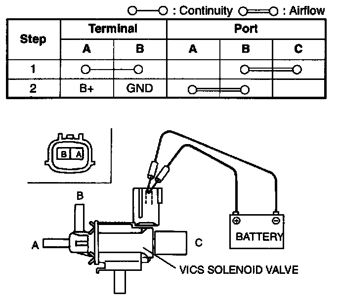
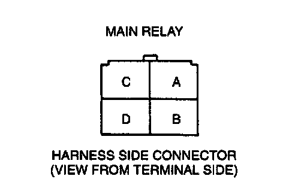

VICS Solenoid Valve
Simulation Test1. Carry out the "VICS Operation Inspection". (Refer to VICS Operation Inspection.)
2. If not as specified, perform the further inspection for the VICS solenoid valve.
Airflow Inspection
NOTE:
- Perform the following test only when directed.
1. Remove the VICS solenoid valve.

2. Inspect for airflow between each port under the conditions shown in the diagram.
3. If not as specified, replace the VICS solenoid valve. If as specified but the Simulation Test is failed, inspect following:
Vacuum hose improper routing, kinks or leakage.

Open circuit
- Power circuit (VICS solenoid valve connector terminal A and main relay connector terminal D through common connector.)
- Ground circuit (VICS solenoid valve connector terminal B and PCM connector terminal 3Q.)
Short circuit
- VICS solenoid valve connector terminal A and main relay connector terminal D through common connector to ground.